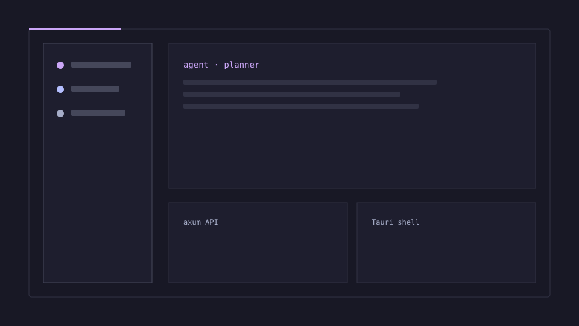
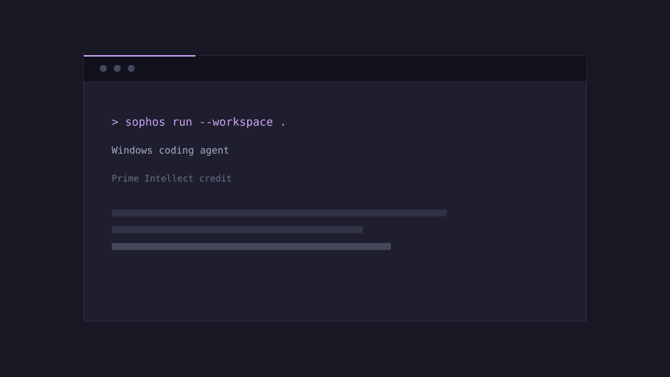

dotz — multi-agent coding dashboard
A local-first control surface for coordinating coding agents. The public repository and case study are the proof.

Portfolio · public work
Applied AI and systems engineering, shown through public projects and source-linked evidence, with clear limits on what each slice proves.
A local-first control surface for coordinating coding agents. The public repository and case study are the proof.

A Windows-native coding agent built under Prime Intellect credit. The credit is named where the work is described.

No customer, revenue, adoption, or company-deployment outcome is claimed.
Each project page separates its need, recorded source slice, full-job status, AI status, evidence limits, and human handoff. Public code visibility does not establish workflow completion.
Finance reconciliation
WIP · INCOMPLETE · Full job · UNVERIFIED · AI UNVERIFIED
Sourced research and risk briefing
WIP · INCOMPLETE · Full job · UNVERIFIED · AI UNVERIFIED
Watch-only exposure monitoring
WIP · INCOMPLETE · Full job · UNVERIFIED · AI UNVERIFIED
Quant research integrity
WIP · INCOMPLETE · Full job · UNVERIFIED · AI UNVERIFIED
Public-text sample question; no customer case or approved support policy.
WIP · INCOMPLETE · Source VERIFIED · Customer-support job · UNVERIFIED · AI UNVERIFIED
Handoff of cited public OPM document text; internal knowledge remains unverified.
WIP · INCOMPLETE · Source VERIFIED · Full job · UNVERIFIED · AI UNVERIFIED
Consented account handoff
WIP · INCOMPLETE · Full job · UNVERIFIED · AI UNVERIFIED
Public OPM text review only; no employer policy or employee record.
WIP · INCOMPLETE · Source VERIFIED · Employee-service job · UNVERIFIED · AI UNVERIFIED
Security operations triage
WIP · INCOMPLETE · Full job · UNVERIFIED · AI UNVERIFIED
Evidence-backed content improvement
WIP · INCOMPLETE · Full job · UNVERIFIED · AI UNVERIFIED
Recorded evidence · retrieved 23–24 September 2026 (see each item’s UTC time below)
These are dated records from earlier runs, not live widgets or current freshness claims. Source status is separate from each workflow’s full-job and AI status.
01 · Treasury DTS
Source VERIFIED · LedgerBridge full job UNVERIFIED
2026-09-21:II:1–2026-09-21:II:10. Source as-of 2026-09-21 (day); retrieved 2026-09-23 16:21:57 UTC. Federal cash is not company books. Response SHA-256 bde7791b9c12c297dd1c05af620f3618951e5c02b8d20e66a087bb0768f059af.02 · World Bank GDP
Source VERIFIED · MarketBrief and BacktestGuard full jobs UNVERIFIED
USA:NY.GDP.MKTP.CD:2011–USA:NY.GDP.MKTP.CD:2025. MarketBrief calculated a 5.02% nominal 2024–2025 change; BacktestGuard checked a chronology split only. Retrieved 2026-09-23 18:51:34 UTC; as-of is annual by observation. Response SHA-256 2e54d1e502eae38a14474323ff0a3353c2f5d711c00009c41f4d752f99fedce3.03 · CISA KEV
Source VERIFIED · SentinelDesk full job UNVERIFIED
CVE-2026-93952, dateAdded as-of 2026-09-22 (day). Retrieved 2026-09-24 09:29:57 UTC. Response SHA-256 e4988831e6d3c9036dc4279cdb7f5e369dadf1b245c7136aa719fca169b894fd.04 · GovInfo OPM proposed-rule text
Source VERIFIED · private support, knowledge, and employee workflows UNVERIFIED
2026-19222, “Employment in the Excepted Service,” published 2026-09-18 (day precision). The DATES section says comments must be received on or before 2026-11-17. Recorded app reads were retrieved 2026-09-24 16:03:29 UTC; each page lists its response hash.05 · GitHub repository metadata
Source VERIFIED · PipelineRelay full job UNVERIFIED
pytest-dev/pytest, stable ID 37489525. Source updated_at as-of 2026-09-23 11:49:07 UTC; retrieved 2026-09-23 16:21:57 UTC. Response SHA-256 74856a0f15dbd5f68b123de0b98ecd3bf82012c73378afe9e8e37cc064f30cae.06 · Historical SearchLift capture
Source HISTORICAL · SearchLift full job UNVERIFIED
SL-SRC-ade9f48af1; response SHA-256 d2351ebc6ced387c9e2c85894ec7b8947174d2fe613a582e5a05e049138e8f5.Review the established public projects, dated data slices, their limits, and the skills visible in the code and evidence.